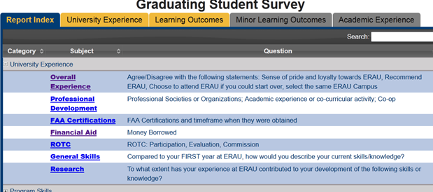
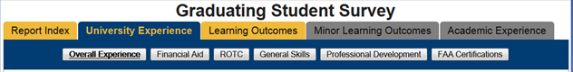
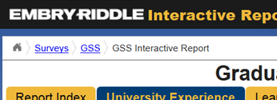

Navigation
Each survey is customized to collect certain types of data, and each has its own set of questions and categories of data. Using the tabs to navigate the reporting tool will allow you to find the data you seek in an efficient manner. The surveys each contain certain question categories. Within these overarching categories are specific subjects that each question could pertain to.
Report Index Tab
Each reporting tool will begin at the "Report Index" tab. This tab displays a table menu of each category and subject, along with descriptions of the questions contained in each subject. The drop down menu of each category will give access to the subject links. These links will take you directly to that category and subject and display the charts of those questions.

Category / Subject Tabs
The main form of navigation through the reporting tool is through the use of the category tabs located above the chart display. The category tabs will be colored blue when selected, and if there are separate subjects within that category, they will be displayed below the tab. Simply click on the desired subject to see the questions from the survey that are relevant to the topic.

Breadcrumbs
Located at the top of the page are links to previous sections of the survey, and Institutional Research website. Use these links to return back to the selected survey's home page, or to return to the survey menu home page to select a different survey to view.

Created with the Personal Edition of HelpNDoc: Easily create HTML Help documents